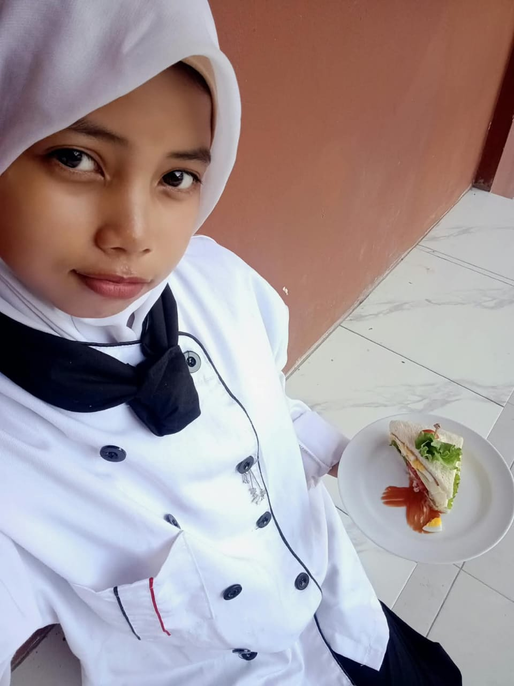
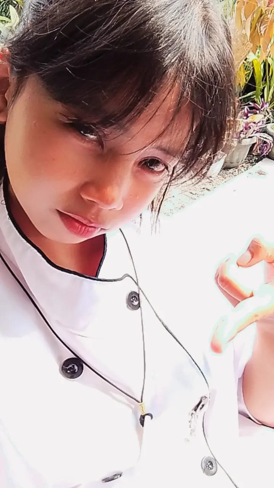
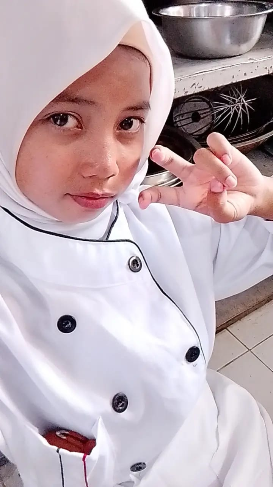
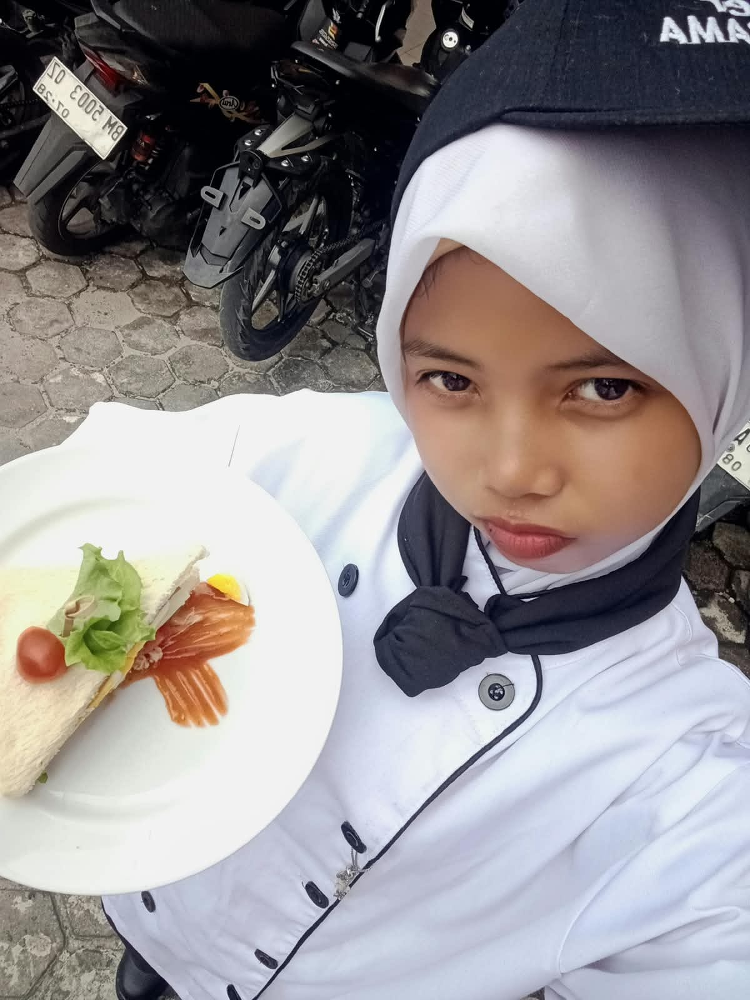

aku cuma pen ngasi kata kata doang si sikikk aaa🗿
Aku cuma pen bilang 🗿, semangat terus yaa. Aku tauu belajar sesuatu ygg baru itu gaa selalu gampang 🤏🏻 Apalagi kalauu harus terus mencoba, mengulang, dan kadang hasilnya belum sesuai dengan apa ygg kita harapkan🤏🏻
Kalau suatu hari masakan mu gagall atau gosong🗿 jangan langsung merasa kalau muuu ituu gaaa bisaa Namanya juga belajar yee kann 🗿Ada resep yang berhasil, ada jugaa yg perlu diperbaiki, ada juga yg mungkin harus dicoba berkali-kali sampai akhirnya ketemu rasa yg pas setelah ke asinan atau kemanisan🗿
yaa kayaa gitu jugaa dengan alur idupp gaa haruss langsung hebat, Nggak harus jugaa langsung sempurna, soal nyaa mu udaa sempurna siee asekk 🗿 yg penting muu terus mau belajarr smaa terus mencobaaa
Mungkin sekarang muu masii belajarr banyakk hal tentang masakan, tentang dapur, tentang rasa, tentang bagaimana membuat sesuatu ygg awalnya sederhana menjadi sesuatu ygg bisa membuat orang lain tersenyum ehee🗿
Dan yaa akuu harap muu jangan pernah malu dengan proses itu🗿 gosong cuma sekali nya jangan malu lak yaa🗿 Karena suatu hari nanti🤏🏻 semua hal yg lagii muu pelajari inii bisa jadi bekal untuk mewujudkan sesuatu yang lebih besar ehee
mu jugaa tadi bilang kalau pengen punya usaha sendiri ehee🤏🏻 mogaa keinginan ituu gaa cuma berhenti sebagai sebuah angan-angan🤏🏻 mogaa pelan pelan muu bisaa wujudkan mimpi itu yaaaa🤏🏻
Jadi kalau lagii capee istirahat sebentar ajaaa Kalau Lagii bingung, pelajari lagi pelan-pelan, kalau ga juga cuma bawa mandi mana tau dapat kek tadi kan🗿 Tapi jangan berhenti hanya karena hari ini belum berhasil yaaa🤏🏻
Karnaa mungkin, dapur tempat muu belajar hari ini sedang menjadi awal dari cerita besar yang belum muu tahu akhirnya, jsdii yaaa semangatttt trus yakk




Semoga setiap langkah ygg muu jalanii selalu diberi kemudahan yaa ehee
Semoga ilmu ygg muu pelajari menjadi sesuatu ygg bermanfaat dan bisa bawaa muu lebih dekett ke cita cita muu ehee
Semoga suatu hari nanti muu bisa punyaa usaha yg mu impikan ituu Semoga rezeki muu dilancarkan, usaha mu dimudahkan, dan semua kerja keras muu mendapatkan hasil yang baik🤏🏻
Dan ketika hari iru tibaa semoga muu bisa melihat kembali semua proses muu dan menyadari bahwa setiap lelah, setiap kegagalan, dan setiap kali muu mencoba lagi ternyata punya arti ehee🤏🏻
Nggak perlu terburu-buru. Bangun semuanya pelan-pelan. Belajar dulu, kumpulkan pengalaman, nikmati prosesnya.
Karena mimpi yang besar juga dimulai dari langkah-langkah kecil.
Terus belajar, terus mencoba, dan jangan terlalu keras sama diri sendiri ketika sesuatu belum berjalan sesuai rencana.
muu masih punya banyak waktu untuk belajar, berkembang, dan mengejar apa ygg kamu inginkan ehee🤏🏻
Semoga suatu hari nanti,
muu bisa berdiri di tempat ygg selama ini
muu impikan dan berkata:
"Akhirnya aku sampai juga."